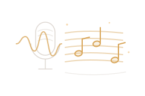

Qual música vamos tocar?
Busque no YouTube, ouça um trecho e gere a partitura com a letra embaixo das notas.
Na sua biblioteca
Escolha uma música à esquerda.
música com voz → partitura de piano, com letra

Busque no YouTube, ouça um trecho e gere a partitura com a letra embaixo das notas.
Escolha uma música à esquerda.